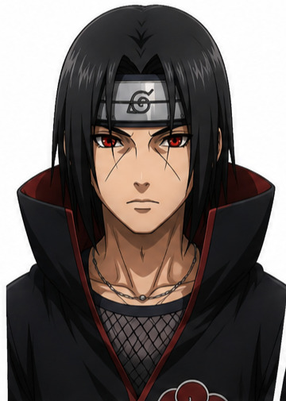

Features
Stateless AI Architecture
Powered by axum and HTMX for a reactive, server-driven UI with no frontend frameworks.
Local Contextual Memory
Pure-Rust vector database using rusqlite with a custom cosine_similarity function for recalling past conversations.
Native OS Speech
Leverages the Web Speech API (SpeechRecognition & SpeechSynthesis) inside the Tauri Webview for zero-latency TTS/STT.
Dynamic Mascot States
Seamless UI updates rotating between idle, thinking, listening, and talking graphic states.
Transparent Desktop Mode
Frameless, transparent window for native desktop immersion on Windows and Linux.
Screenshot

Tech Stack
 Axum
Axum SQLite / Rusqlite
SQLite / RusqliteGetting Started
Rusting Jiin connects to a local AI server (via LM Studio). Follow the full installation guide on GitHub to set up your environment.